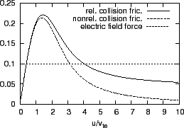

Next: Runaway rate Up: runaway_problem Previous: Relativistic Kinetic Equation
The dynamics of electrons in plasmas is influenced by the coulomb collisions. The collision drag force is usually a decreasing function in electrons' velocity in the large velocity region, as shown in Fig. 1. If an electric field is applied to a plasma, a certain fraction of electrons will gain an energy such that the electric force on them exceeds the collision drag force and they will keep being accelerated. This process is called electron runaway[1].
|  |
We can define a critical velocity, , for which collision drag force balance the electric force, i.e.,
| (4) |
The creation rate (or birth rate) of runaways due to a dc electric field,
called runaway rate, is defined as the ratio of number of particles which
runaway in a ``collision time'',  , to the number of particles which
remain non-runaway. Runaway is a problem in velocity space. A runaway particle
is created when it moves from the collision dominant region in velocity to the
nearly collisionless region. For convenience, we use spherical coordinates,
, to describe velocity space (axial symmetry is assumed). The
electron distribution is initially Maxwellian. A dc electric filed in the
direction of the axis of symmetry is applied to the plasma at the initial
time. We choose an arbitrary velocity, denoted as
, to the number of particles which
remain non-runaway. Runaway is a problem in velocity space. A runaway particle
is created when it moves from the collision dominant region in velocity to the
nearly collisionless region. For convenience, we use spherical coordinates,
, to describe velocity space (axial symmetry is assumed). The
electron distribution is initially Maxwellian. A dc electric filed in the
direction of the axis of symmetry is applied to the plasma at the initial
time. We choose an arbitrary velocity, denoted as  . Under the
influence of the collision and electric field, some electrons whose velocity
is initially larger than
. Under the
influence of the collision and electric field, some electrons whose velocity
is initially larger than  may become smaller than
may become smaller than  , while
some other electrons whose velocity is initially smaller than
, while
some other electrons whose velocity is initially smaller than  may
become larger than
may
become larger than  . This process generates a flux across the
spherical surface
. This process generates a flux across the
spherical surface
 . For a larger enough
. For a larger enough  , e.g.,
, the collisional influence on the electrons may be
neglected, the dominant process is the acceleration or deceleration by the
electric field. In the vicinity of the
, e.g.,
, the collisional influence on the electrons may be
neglected, the dominant process is the acceleration or deceleration by the
electric field. In the vicinity of the
 surface, the
acceleration of electrons generates an out-flow flux across the surface while
the deceleration generates an in-flow flux. The in-flow flux across the
surface can be further neglected since there is few electrons initially in the
region
(since is initially Maxwellian and
surface, the
acceleration of electrons generates an out-flow flux across the surface while
the deceleration generates an in-flow flux. The in-flow flux across the
surface can be further neglected since there is few electrons initially in the
region
(since is initially Maxwellian and
 ). (Note that, at later time, some electrons enter the region
through the acceleration by the electric field. However, since these
particles are collisionless, they will keep being accelerated, with no chance
to be decelerated to generate the in-flow flux.) In the next section, the
out-going flux at the spherical surface,
will be used to
define the runaway rate.
). (Note that, at later time, some electrons enter the region
through the acceleration by the electric field. However, since these
particles are collisionless, they will keep being accelerated, with no chance
to be decelerated to generate the in-flow flux.) In the next section, the
out-going flux at the spherical surface,
will be used to
define the runaway rate.
YouJun Hu 2012-12-08